1978
Springfield, Ohio
John Roger Stephens is born on December 28. His mother sings and directs the church choir; his grandmother plays the church organ.
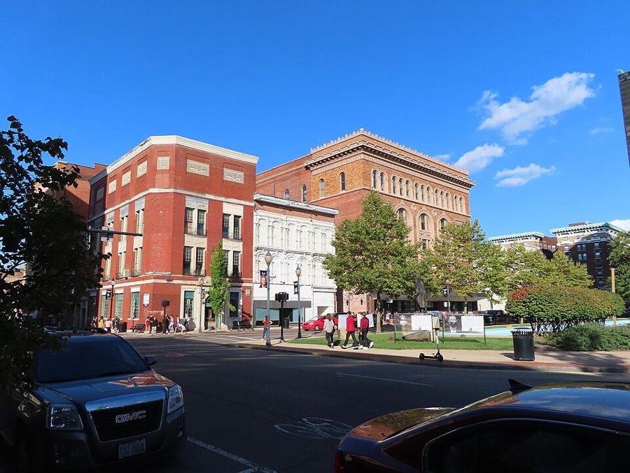
Source: Wikipedia
From a church choir in Springfield, Ohio, to a studio in Paris.
John Roger Stephens is born on December 28. His mother sings and directs the church choir; his grandmother plays the church organ.

Homeschooled by his mother, he starts piano at four and sings with his church choir at seven.
Having skipped two grades, he starts at Springfield North High School at 12 and graduates salutatorian.
He enrolls at the University of Pennsylvania and leads the Counterparts, its jazz and pop a cappella group, as president and musical director.
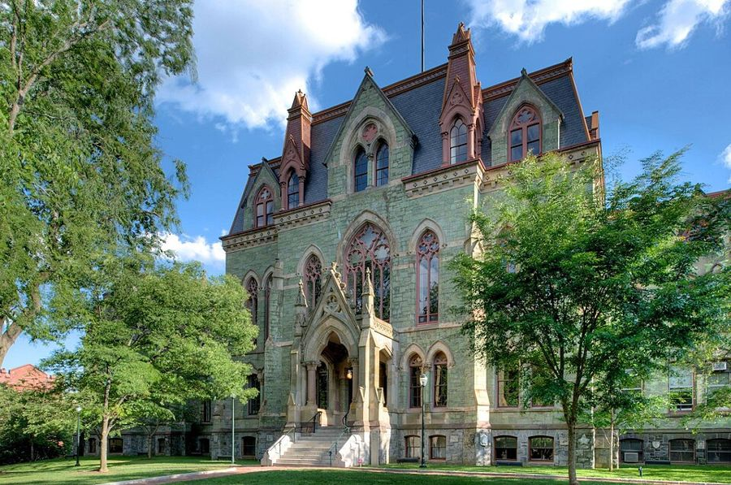
At 19 he plays piano on Lauryn Hill’s “Everything Is Everything” from The Miseducation of Lauryn Hill. It is his first appearance on a commercial record.
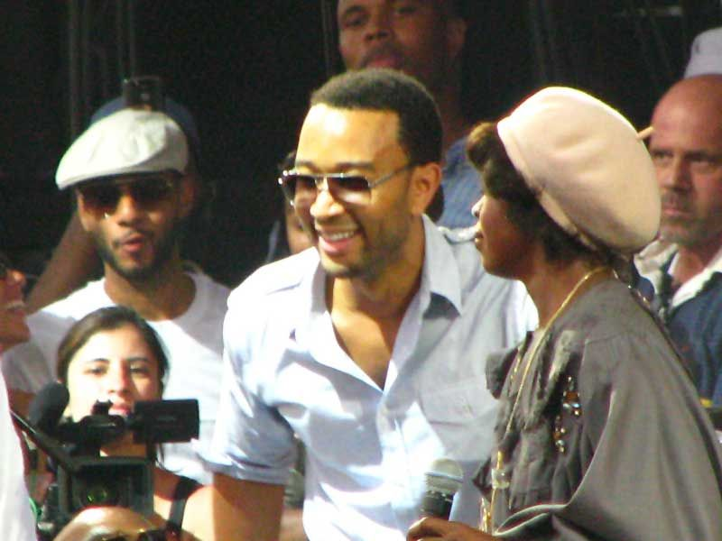
He graduates magna cum laude in English, takes a day job in consulting, and sells his own self-released records at his shows.
Uncredited backing vocals on Jay-Z’s “Encore” and Alicia Keys’ “You Don’t Know My Name”.
He meets Pharrell Williams, already a towering producer and style icon, while John is still largely unknown. It is the start of a friendship of more than two decades.
He signs his first record deal and takes a new name from the poet J. Ivy: John Legend. His debut, Get Lifted, arrives in December with “Ordinary People”.
February 8: Best New Artist, Best R&B Album for Get Lifted, and Best Male R&B Vocal Performance for “Ordinary People”.
Grammy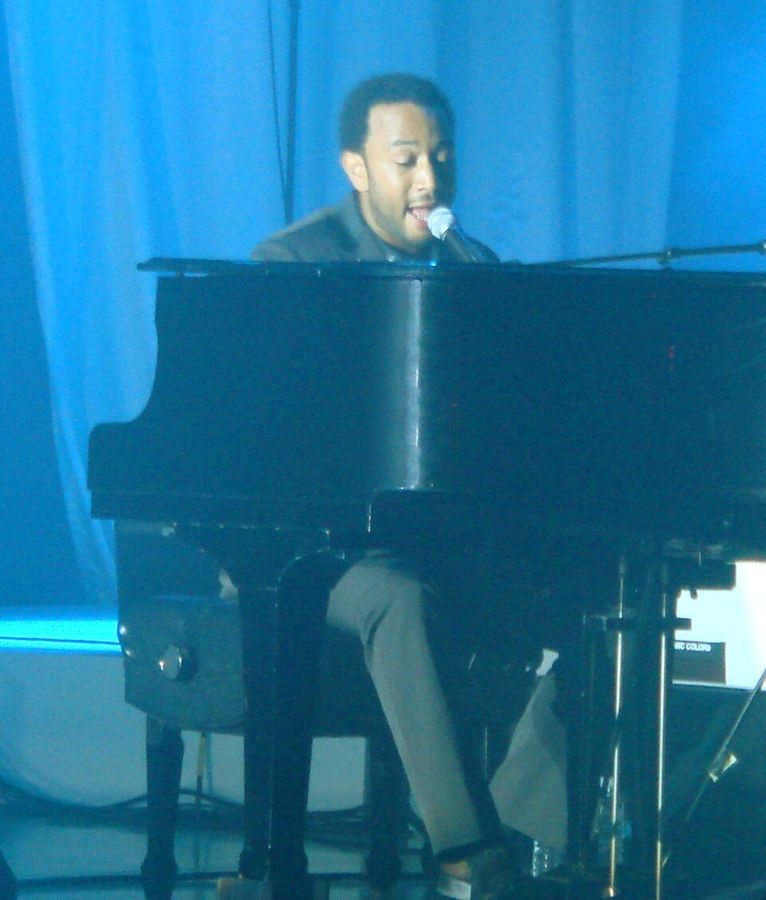
His second album arrives in October. “Heaven” wins another Grammy the following February.
His third album, with “Green Light” featuring André 3000 and “It’s Over”, an early collaboration with Pharrell.
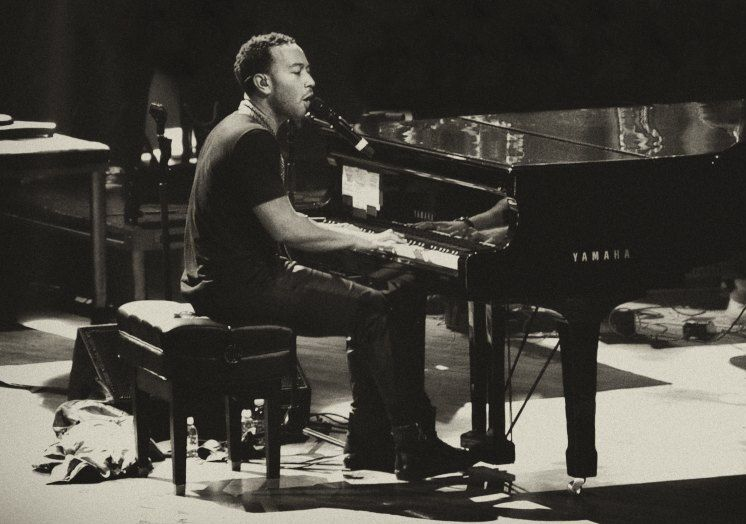
A collaborative album with The Roots, released September 21. It wins three Grammys in 2011.
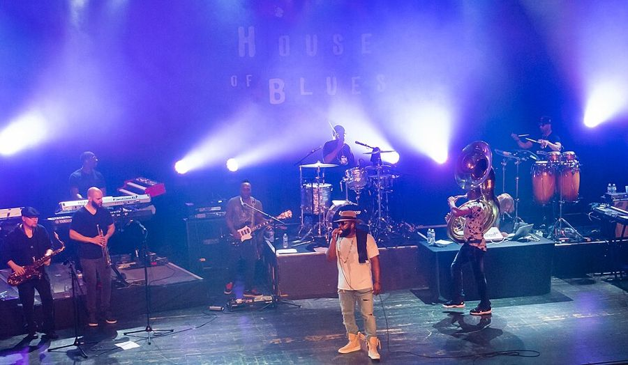
Love in the Future arrives September 3. “All of Me”, dedicated to his wife Chrissy Teigen, spends three weeks at No. 1 on the Billboard Hot 100. The album also carries “Aim High”, written by Pharrell and produced by Pharrell with John.
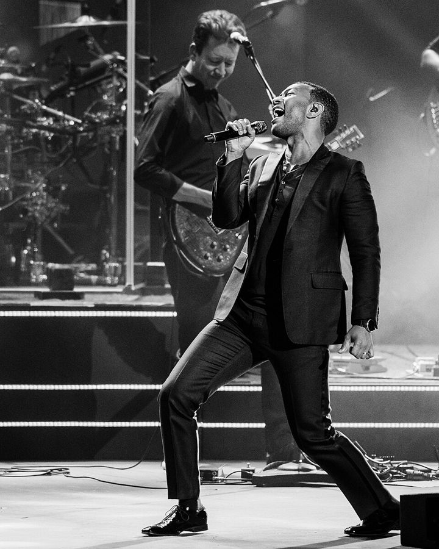
February 22: “Glory”, written with Common for the film Selma, wins the Academy Award for Best Original Song.
OscarJune 11: as a producer of August Wilson’s Jitney, he shares the Tony Award for Best Revival of a Play.
Tony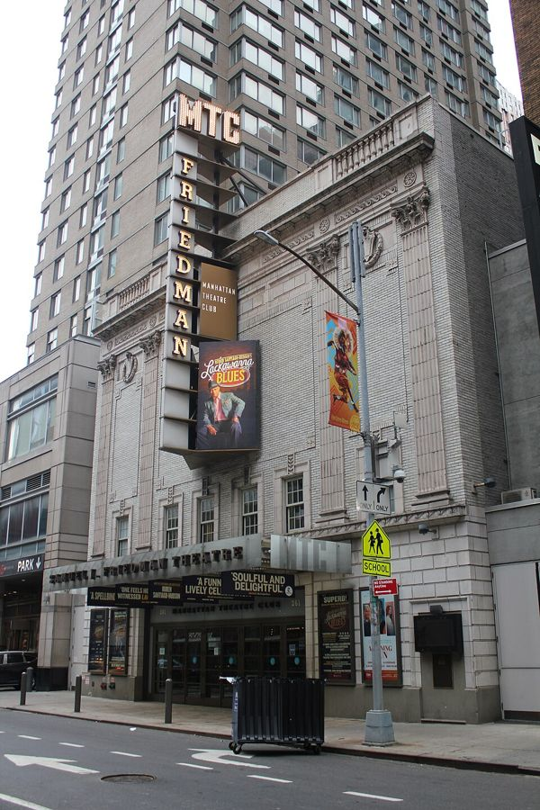
September 9: Jesus Christ Superstar Live in Concert, which he starred in and produced, wins the Emmy for Outstanding Variety Special (Live). He becomes the first Black man to win an Emmy, a Grammy, an Oscar and a Tony.
EmmyHis first holiday album, released October 26, with Stevie Wonder and Esperanza Spalding.
He joins The Voice as a coach and wins his first season with Maelyn Jarmon.
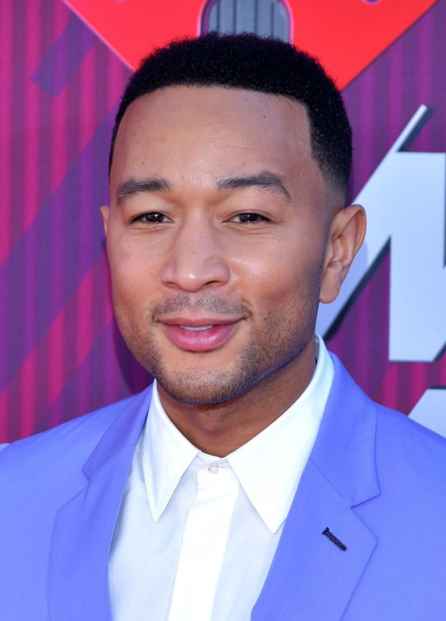
Released June 19. It wins the Grammy for Best R&B Album.
A new album, released September 9.
After he sings on Clipse’s comeback record, produced by Pharrell, a call comes from Paris before dawn, around 5 AM in Los Angeles: “What are you doing for your next album?” Around Christmas he cuts “Daylight” at home in Los Angeles.
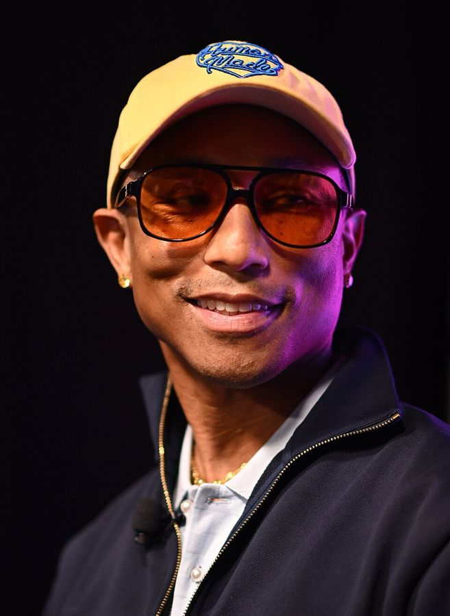
The sessions begin in Paris, in Pharrell’s studio at Louis Vuitton’s headquarters, where he is Men’s Creative Director. More trips and sessions over Zoom follow.
“Pray For Ya” soundtracks Louis Vuitton’s Fall-Winter 2026 Men’s show.
Muse is announced, produced in full by Pharrell, and “Daylight” arrives as the first single, previewed the night before with a performance from Nashville.
Sixteen tracks, produced in full by Pharrell and made largely in his studio at Louis Vuitton’s Paris headquarters.
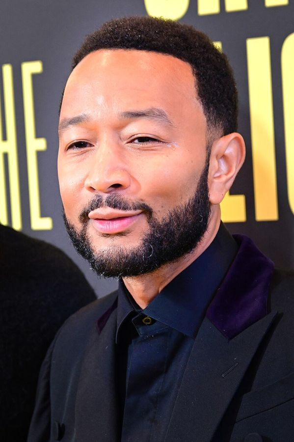